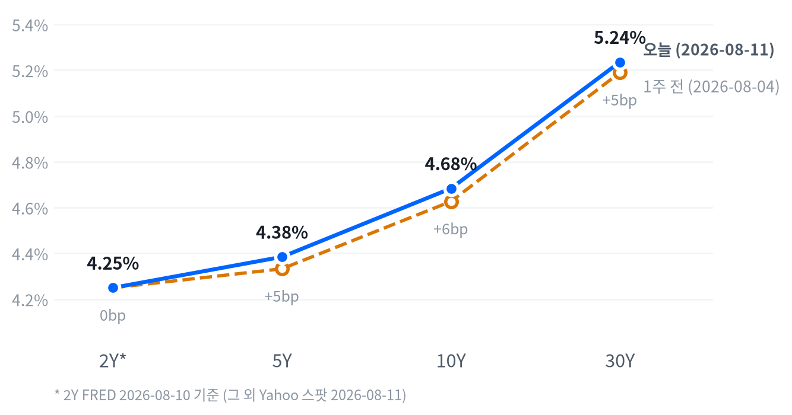

이날 시장을 움직인 핵심 동인은 지정학이다. 미국·이란의 호르무즈 해협 재개방 협상이 통항 경로를 둘러싼 이견으로 교착 상태에 빠졌고, 이란 외무부 대변인과 혁명수비대가 잇따라 강경 입장을 재확인하면서 유가·금이 동반 급등했다. 여기에 알파벳이 딥마인드 리더십 공백(하사비스 회장 이동, 제프 딘 퇴사)과 자본지출 가이던스 150억 달러 추가 상향(1,950억~2,050억 달러)이라는 개별 악재까지 겹치며 나스닥·커뮤니케이션서비스 섹터를 끌어내렸다.
크로스에셋 신호는 대체로 정합적이면서도 폭이 좁은 조정임을 보여준다. 주식은 하락했지만 유가·금이 오르고 국채금리는 화요일 하루로는 오히려 소폭 낮아졌으며(Yahoo 기준), 러셀2000·가치주·에너지·유틸리티가 견조했다는 점은 이번 조정이 전면적 위험회피라기보다 대형 성장주·기술주에 국한된 색채가 짙다는 뜻이다. 금의 안전자산 수요와 달러의 완만한 강세(특히 엔화 약세)가 지정학 리스크에 대한 일정 수준의 경계감을 보여주는 한편, 국채금리가 급등하지 않았다는 점은 채권시장이 아직 스태그플레이션적 확전 시나리오까지는 가격에 반영하지 않고 있음을 시사한다.
다음 촉매는 8/12(수) 8:30 ET에 발표되는 7월 CPI다. FedWatch 9월 인상 확률이 7/23 한때 82%까지 치솟았다가 8/7 고용쇼크로 크게 후퇴하는 등 이번 주 내내 톱니 모양으로 출렁인 만큼, CPI 결과가 다음 방향을 정할 확률이 높다. 그 밖에 호르무즈 협상의 진전 여부, 다른 빅테크의 AI 자본지출 가이던스 후속 발언, SK하이닉스·삼성전자발 메모리 가격 데이터도 단기 변동성의 스윙 팩터로 남아 있다.
| 지수 | 종가 | 전일比 | 등락률 |
|---|---|---|---|
| 러셀2000 | 3,027.12 | +9.72 | +0.32% |
| S&P500 Value | 236.37 | +0.04 | +0.02% |
| S&P500 | 7,728.20 | -24.91 | -0.32% |
| 다우존스 | 53,791.85 | -184.13 | -0.34% |
| 나스닥종합 | 26,445.45 | -159.91 | -0.60% |
| S&P500 Growth | 140.86 | -0.89 | -0.63% |
| 섹터 | 종가 | 전일比 | 등락률 |
|---|---|---|---|
| 에너지 | 60.93 | +0.75 | +1.25% |
| 유틸리티 | 43.63 | +0.50 | +1.16% |
| 산업재 | 185.70 | +1.10 | +0.60% |
| 소재 | 53.24 | +0.06 | +0.11% |
| 금융 | 57.80 | -0.01 | -0.02% |
| 기술 | 186.09 | -0.23 | -0.12% |
| 헬스케어 | 168.01 | -0.43 | -0.26% |
| 필수소비재 | 84.69 | -0.26 | -0.31% |
| 임의소비재 | 119.24 | -0.43 | -0.36% |
| 커뮤니케이션 | 111.27 | -0.56 | -0.50% |
| 리츠 | 44.08 | -0.32 | -0.72% |
나스닥과 S&P500은 09:30 정규장 개장과 동시에 이날 고점을 찍고 이후 줄곧 밀리는 패턴을 보였다. 나스닥은 개장가(26,669.18) 대비 14:00 ET에 -1.11%까지 저점을 형성한 뒤 소폭 반등해 마감했고, S&P500도 09:30 시가가 그대로 고점이 되어 14:00 저점(-0.65%)을 거쳐 낙폭을 일부 되돌렸다. 호르무즈 해협발 지정학 리스크와 알파벳 개별 악재가 오전부터 매물을 자극하며 장 후반까지 눌림목이 이어진 흐름이다.
러셀2000은 대형주와 궤적 자체가 달랐다. 개장가 부근(09:30)에서 이미 저점을 다졌고 10:00 ET에 장중 고점(개장가 대비 +0.40%)을 찍은 뒤 눌림에도 플러스권을 지켜내며 마감해, 대형 기술주 조정과 스몰캡 강세가 같은 날 동시에 나타나는 뚜렷한 디커플링을 보였다.
엔비디아는 지수보다 훨씬 가파른 조정을 겪었다. 09:30 고점(222.20) 이후 14:00 저점(216.30)까지 개장가 대비 -2.63% 밀렸다가 종가는 217.50으로 낙폭을 상당폭 되돌렸는데, 이는 오후 매도의 진원지가 대형 기술주·반도체였음을 보여준다.
지수 하락폭 자체는 -0.3~-0.6%대로 크지 않지만 내부 온도차가 뚜렷하다. 에너지·유틸리티·산업재가 유가 급등과 방어주 수요에 힘입어 상승한 반면 리츠·커뮤니케이션서비스·임의소비재는 금리·개별 악재에 눌렸고, 대형 성장주(나스닥·S&P500 Growth)와 소형·가치주(러셀2000·S&P500 Value)의 스프레드가 하루 만에 0.9%p 가까이 벌어졌다.
이는 시장 전체가 위험회피로 돌아섰다기보다 알파벳 중심의 빅테크 개별 리스크와 유가발 인플레 우려가 혼재된 국면임을 시사한다. 포지셔닝 측면에서는 지수 추종보다 팩터·섹터 로테이션에 대응하는 편이 유효해 보인다.
| 만기 | 종가(8/11) | 전일比 | 1주 전 | 주간 변화 |
|---|---|---|---|---|
| 2Y* | 4.25% | +6.0bp | 4.25%(8/3) | 0.0bp |
| 5Y | 4.385% | -2.0bp | 4.333%(8/4) | +5.2bp |
| 10Y | 4.684% | -1.5bp | 4.627%(8/4) | +5.7bp |
| 30Y | 5.236% | -0.7bp | 5.190%(8/4) | +4.6bp |

월요일(FRED 8/10 기준)에는 2Y·5Y·30Y가 나란히 +6.0bp, 10Y가 +7.0bp 뛰며 전 구간이 호르무즈발 유가 충격과 클리블랜드 연은 해맥 총재의 매파 발언을 반영해 일제히 밀려 올라갔다. 화요일(Yahoo 8/11 기준)에는 반대로 5Y·10Y·30Y가 각각 -2.0bp, -1.5bp, -0.7bp로 소폭 되돌림을 보여, 전날의 매파적 되가격이 하루 만에 숨 고르기에 들어간 모습이다.
이날 위험자산 약세가 새로운 금리 충격이 아니라 알파벳 개별 리스크·유가 장중 변동성에서 비롯됐음을 뒷받침하는 대목이다. 다만 1주일 단위로 보면 5Y·10Y·30Y가 각각 +5.2bp, +5.7bp, +4.6bp 오르며 장기물 중심의 완만한 베어 스티프닝이 진행 중이다. 2Y는 주간 기준 보합(FRED 8/3→8/10)이지만 이 구간은 하루 이상 뒤처진 데이터라 방향성을 단정하기는 이르다.
2s10s 스프레드(43.4bp, 기준일 혼재)와 동일자 FRED 기준 47.0bp 간 차이는 3.6bp로 크지 않아 날짜 불일치보다는 실제 스프레드 수준으로 봐도 무방하다. 85.1bp에 달하는 5s30s 스프레드는 장기 구간이 상대적으로 가파르게 서 있다는 뜻이며, 8/12 CPI 결과에 따라 이 스티프닝이 강화될지 되돌려질지가 갈릴 전망이다.
월~화 이틀 새 방향이 뒤집힌 변동성 자체가 메시지다. 7월 CPI(8/12 08:30 ET) 발표 전까지는 방향성 베팅보다 중립 듀레이션을 유지하는 편이 합리적이며, CPI가 상회할 경우 호르무즈·해맥 매파 조합이 되살아나며 10Y가 최근 고점(TradingEconomics 기준 4.73% 부근) 재시험에 나설 수 있다.
반대로 CPI가 FRED 확정치가 보여준 디스인플레이션 추세(6월 헤드라인 3.73%, 근원 2.81%, 모두 전월 대비 둔화)를 재확인하면 장기물 강세·커브 스티프닝 되돌림 시나리오에 무게가 실린다. 확인 트리거는 10Y 4.75% 상향 이탈 시 듀레이션 축소, 4.60% 하향 이탈이 4주 평균 실업수당 청구 개선세와 함께 확인될 때 듀레이션 확대로 잡는 것을 권고한다.
| 페어 | 종가 | 전일比 | 등락률 |
|---|---|---|---|
| 달러인덱스(DXY) | 99.83 | +0.02 | +0.02% |
| USD/KRW | 1,412.38 | +5.38 | +0.38% |
| USD/JPY | 159.28 | +1.39 | +0.88% |
| EUR/USD | 1.1546 | -0.0010 | -0.09% |
USD/JPY는 도쿄 새벽장인 01:30 ET에 158.92까지 밀린 뒤(개장가 대비 -0.20%) 뉴욕 오전 10:00 ET에 159.39로 고점을 찍고 그 부근에서 마감해, 하루 사이 저점에서 고점까지 약 0.3% 폭의 되돌림을 보였다. 달러인덱스는 +0.02%로 거의 보합이었지만 엔화에 대해서만 유독 큰 폭(+0.88%)으로 약세를 보인 점이 눈에 띈다.
호르무즈발 위험회피 국면에서도 달러가 전방위 강세를 보이기보다 엔화에 국한된 약세가 두드러졌다는 것은, 이번 약세가 단순 안전자산 선호보다 미·일 금리차 요인이 더 크게 작용했을 가능성을 시사한다. 원화는 달러 대비 +0.38% 약세로 여타 아시아 통화와 비슷한 수준의 위험회피·유가 부담을 반영했고, 유로는 -0.09%로 상대적으로 안정적이었다.
| 품목 | 종가 | 전일比 | 등락률 |
|---|---|---|---|
| WTI | 83.23 | +1.10 | +1.34% |
| 브렌트유 | 88.95 | +1.23 | +1.40% |
| 천연가스 | 2.75 | -0.05 | -1.65% |
| 금 | 4,427.80 | +66.00 | +1.51% |
최대 변동폭은 금(+1.51%)이었고 브렌트(+1.40%)·WTI(+1.34%)도 나란히 큰 폭으로 올랐다. 미국·이란의 호르무즈 해협 재개방 협상이 교착 상태에 빠졌다는 소식이 유가·금 동반 상승의 공통 배경이다.
WTI는 뉴욕 개장 전인 05:00 ET에 84.61달러로 고점을 찍었다가(개장가 대비 +3.06%) 정규장 개장 시점인 09:30 ET에는 81.27달러까지 되밀렸고(-1.01%), 이후 다시 반등해 결국 +1.34% 상승 마감했다. 호르무즈 헤드라인에 유가가 장중 크게 출렁였음을 보여주는 궤적이다.
금은 자정 무렵(00:30 ET) 4,480.30달러로 고점을 찍은 뒤 미 새벽장인 03:30 ET에 4,415.70달러까지 저점을 낮췄다가(-1.36%) 다시 오르며 강세로 마감해, 안전자산 수요와 저가 매수가 교차한 하루였다. 천연가스만 -1.65%로 에너지 복합체 전체 흐름과 반대로 움직여 원유·지정학 재료와는 별도의 수급 요인이 작용한 것으로 보인다.
| 자산군 | 판단 | 전략 근거 |
|---|---|---|
| 주식 | 중립 (팩터 로테이션 주목) | 알파벳발 개별 리스크와 유가 충격에 대형 성장주가 조정받는 반면 러셀2000·가치주는 견조 — 지수 방향성보다 팩터·섹터 로테이션 대응이 유효 |
| 채권 | 중립 (CPI 확인 대기) | 월요일 전 구간 매파적 되가격 후 화요일 소폭 되돌림, 주간 기준 완만한 베어 스티프닝 — 8/12 CPI 전까지 듀레이션 방향성 베팅은 보류 |
| FX | 달러 중립-강세, 엔화 약세 주시 | DXY는 보합에 가까운데 엔화만 두드러진 약세(+0.88%) — 안전자산 수요보다 미·일 금리차 요인에 무게, 캐리·헤지 포지션 점검 필요 |
| 원자재 | 단기 상승 모멘텀 유효, 이벤트드리븐 대응 | 호르무즈 협상 결렬 지속 시 유가 추가 상방 여력, 반대로 협상 재개 시 되돌림 리스크가 커 추격매수보다 헤지성 접근 권고 |
| 메모리 | 분할 저가매수 접근 | 가격인상 눈높이 하회(SK하이닉스 DRAM +19% vs 기대 +39%)로 조정받았던 구간에서 8/11 반등 — 베어마켓 진입 진단도 있어 일괄매수보다 분할 접근 |
| AI 인프라(전력·광인프라) | 상대적 비중확대 검토 | 버티브(+4.34%)·GE버노바(+2.12%) 등 전력·냉각 인프라주가 반도체 대비 견조 — 데이터센터 전력 수요 테마 연장선에서 수주 모멘텀 확인 시 비중확대 여지 |
① 호르무즈 확전 — 협상 결렬이 물리적 충돌로 번질 경우 유가 추가 급등과 함께 인플레이션이 재점화되고, 연준이 매파 쪽으로 기울며 위험자산 전반의 조정이 심화될 수 있다.
② CPI 서프라이즈(상회) — 8/12 CPI가 예상을 웃돌면 FedWatch 인상 확률이 7/23 고점(82%)에 근접하는 수준까지 재상승하고 장기금리가 급등해, 밸류에이션 부담이 큰 성장주·메모리 섹터가 추가 조정받을 소지가 있다.
③ 고용 둔화 지속 — 7월 NFP(-2.3만 명)·ADP(+4.4만 명) 부진이 다음 지표에서도 재확인되면, 연준이 매파 발언에도 불구하고 완화 논의로 선회할 수 있어 스태그플레이션 우려 속 자산배분 신호가 엇갈릴 수 있다.
가장 강한 상승은 전력·데이터센터 인프라주에서 나왔다. 버티브가 +4.34%로 이날 커버리지 종목 중 최대 상승폭을 기록했고 GE버노바도 +2.12% 올라, 데이터센터 전력·냉각 수요 테마가 반도체·메모리 대비 견조한 흐름을 보였다.
메모리·스토리지에서는 삼성전자(+4.13%)와 씨게이트(+2.44%)가 두드러졌다. 최근 몇 주간 가격인상 눈높이 하회와 공급과잉 우려로 조정받았던 종목들이라 저가 매수 유입 가능성이 있으나, 8/11 당일의 구체적 촉발 뉴스는 확인되지 않아 해석에 유의할 필요가 있다.
반대편에서는 알파벳(GOOGL -3.6%, GOOG -3.4%, TradingKey 집계)이 최대 낙폭 종목이었다. 구글 딥마인드 리더십 이탈과 자본지출 가이던스 추가 상향에 따른 프리캐시플로우 부담이 겹친 결과로, 이날 나스닥·커뮤니케이션서비스 약세의 핵심 축이었다.
| 종목 | 종가 | 전일比 | 등락률 |
|---|---|---|---|
| 삼성전자 | 239,500원 | +9,500 | +4.13% |
| 씨게이트 | $820.52 | +19.53 | +2.44% |
| 마이크론 | $868.52 | +7.52 | +0.87% |
| SK하이닉스 | 1,425,000원 | +5,000 | +0.35% |
| 엔비디아 | $217.50 | -0.05 | -0.02% |
| 웨스턴디지털 | $437.93 | -0.41 | -0.09% |
메모리 섹터는 최근 몇 주간 롤러코스터 장세를 이어왔다. 7월 중순 SK하이닉스의 부진한 가이던스에 마이크론·샌디스크·웨스턴디지털이 6% 급락했고(7/13), 8월 초에는 반대로 씨게이트·웨스턴디지털이 공급과잉 우려로 6% 급락하는(8/3) 등 방향이 자주 바뀌었다. — 247wallst
8/9 모틀리풀 보도에 따르면 SK하이닉스·삼성전자의 가격 인상폭이 시장 기대에 못 미친 점이 마이크론 투자자들에게 경고 신호로 해석됐다. SK하이닉스 DRAM 가격은 전분기 대비 약 +19% 올랐는데, 이는 골드만삭스가 기대했던 +39%에 크게 못 미치는 수준이고, 삼성전자 역시 모닝스타의 기대치(+48%)에 미달했다는 평가가 나오며 일각에서는 메모리주가 '베어마켓'에 진입했다는 진단까지 제기됐다.
삼성·SK하이닉스의 공급 증설 발표가 향후 가격을 눌러 공급이 수요를 앞지를 수 있다는 우려, AI 설비투자가 2026년 중 정점을 찍고 이후 둔화할 것이라는 전망도 함께 거론된다. 다만 8/11 당일은 이런 우려에도 웨스턴디지털을 제외한 대부분의 메모리·스토리지주가 강세로 마감했는데, 당일자 개별 촉발 뉴스는 확인되지 않아 저가 매수 유입 정도로 추정할 수 있을 뿐 단정하기는 어렵다.
가격 인상폭이 기대치를 밑돌았다는 소식과 8/11 당일의 반등이 공존하는 구간이라, 밸류에이션 눈높이 조정이 상당 부분 진행된 뒤 저가 매수가 유입되는 국면으로 볼 수 있다. 다만 공급 증설과 AI 설비투자 피크아웃 우려가 완전히 해소된 것은 아니어서, 일괄 매수보다는 SK하이닉스·삼성전자의 다음 분기 가격 가이던스를 확인하며 분할 접근하는 편이 안전하다.
| 종목 | 분야 | 종가 | 전일比 | 등락률 |
|---|---|---|---|---|
| 버티브 | 데이터센터 전력·냉각 | $281.81 | +11.71 | +4.34% |
| GE버노바 | 발전·송배전 설비 | $1,011.88 | +21.03 | +2.12% |
| 마벨 | AI 반도체·커스텀 실리콘 | $212.31 | +3.75 | +1.80% |
| 코히런트 | 광트랜시버·광부품 | $328.57 | +3.42 | +1.05% |
| 루멘텀 | 광부품·광연결 솔루션 | $820.59 | +7.08 | +0.87% |
마벨과 루멘텀은 지난 3월 OFC 2026에서 처음 공개한 광회선교환(OCS) 기술 공동 시연을 이어가며, AI 스케일업 인프라향 초저지연·저전력 광 연결 솔루션 협업을 지속하고 있다. — Marvell 뉴스룸
마벨은 8월 들어 서버급 AI 스토리지, 랙 스케일 CXL 메모리 확장·풀링, 팟 레벨 광 공유 메모리에 걸친 신제품 라인업을 발표했고, PCIe 6.0 SSD 컨트롤러 'Bravera SC6'는 2026년 4분기 샘플링을 예정하고 있다. — Marvell 뉴스룸
배경으로는 엔비디아가 지난 3월 루멘텀·코히런트에 각각 20억 달러를 전략적으로 투자하고 다년간 구매 약정과 향후 생산능력 우선권을 확보한 바 있어, 두 광학 부품사의 AI 데이터센터向 수주 기반이 되고 있다는 점도 짚어둘 만하다. GE버노바·버티브는 데이터센터 전력·냉각 수요 확대라는 업계 공통 테마에서 반복적으로 언급되는 종목이지만, 8/11 당일 개별 촉발 뉴스는 확인되지 않았다.
이날은 반도체·메모리보다 전력·광인프라 쪽이 뚜렷하게 강했다(버티브·GE버노바 전원 상승, 엔비디아는 -0.02%로 사실상 보합). 데이터센터 전력 수요라는 구조적 테마 자체는 훼손되지 않았다고 볼 수 있지만, 당일 급등의 개별 촉매가 명확하지 않은 만큼 후속 수주·실적 가이던스로 모멘텀이 실제로 이어지는지 확인한 뒤 비중을 늘리는 접근이 합리적이다.
| 지표 | Actual | Forecast | Previous | 발표일 | 판정 |
|---|---|---|---|---|---|
| 신규 실업수당 청구건수 | 199K | 203K | 198K | 2026-08-06 | 하회▼ |
| 실업수당 청구 4주 평균 | 198.75K | — | 203.25K | 2026-08-06 | — |
| 계속 실업수당 청구건수 | 1,801K | — | 1,777K | 2026-08-06 | — |
| 비농업고용 증감 | -23K | +83K | +20K | 2026-08-07 | 하회▼ |
| 실업률 | 4.1% | 4.2% | 4.2% | 2026-08-07 | 하회▼ |
| 시간당임금 MoM | 0.05% | — | 0.29% | 2026-08-07 | — |
| JOLTS 구인건수 | 7,359K | — | 7,537K | 2026-06 기준월 | — |
| ADP 민간고용 | +44K | +70K | +95K(수정치) | 2026-08-05 | 하회▼ |
| 지표 | Actual | Forecast | Previous | 발표일 | 판정 |
|---|---|---|---|---|---|
| ISM 서비스업 PMI | 54.1 | 54.5 | 54.0 | 2026-08-05 | 하회▼ |
| 산업생산 MoM | 0.08% | — | 0.14% | 2026-06 기준월 | — |
| 내구재수주 MoM | 0.47% | — | -4.00% | 2026-06 기준월 | — |
| 신규주택판매 | 628K | — | 618K | 2026-06 기준월 | — |
| 기존주택판매 | 4,060K | — | 4,130K | 2026-07 기준월 | — |
| 실질GDP 성장률 QoQ(연율) | 1.5% | — | 2.1% | 2026년 2Q | — |
| 지표 | Actual | Forecast | Previous | 발표일 | 판정 |
|---|---|---|---|---|---|
| 소매판매 MoM | 0.22% | — | 1.02% | 2026-06 기준월 | — |
| 미시간 소비자심리지수 | 49.5 | — | 44.8 | 2026-06 기준월 | — |
| 지표 | Actual | Forecast | Previous | 발표일 | 판정 |
|---|---|---|---|---|---|
| CPI YoY | 3.73% | — | 4.27% | 2026-06 기준월 | — |
| CPI MoM | -0.42% | — | 0.47% | 2026-06 기준월 | — |
| 근원 CPI YoY | 2.81% | — | 2.96% | 2026-06 기준월 | — |
| 근원 CPI MoM | -0.02% | — | 0.21% | 2026-06 기준월 | — |
| PPI 최종수요 MoM | -0.28% | — | 0.62% | 2026-06 기준월 | — |
| PCE 물가지수 YoY | 3.67% | — | 4.08% | 2026-06 기준월 | — |
| 근원 PCE YoY | 3.29% | — | 3.42% | 2026-06 기준월 | — |
| 미시간 1년 기대인플레 | 4.6% | — | 4.8% | 2026-06 기준월 | — |
| NY연은 1년 기대인플레 | 3.6% | — | 3.7% | 2026-08-07 | — |
월요일(8/10, FRED 기준) 전 만기 국채금리가 +6~+7bp 나란히 뛰었다가 화요일(8/11, Yahoo 기준)에는 5Y·10Y·30Y가 -0.7~-2.0bp 되돌리며 숨 고르기에 들어갔다. 같은 날 주식시장은 나스닥이 -0.60%로 밀렸지만 러셀2000은 +0.32%로 올라, 이번 조정이 금리보다는 알파벳 개별 리스크·유가 변동성에 더 크게 좌우됐다는 정황이 강하다.
연준 금리 경로 재가격은 이번 주 내내 톱니 모양으로 출렁였다. CME FedWatch 9월 25bp 인상 확률은 7/23 한때 82%까지 치솟았다가 8/4 61.9%로 낮아졌고, 8/7 고용쇼크(NFP -2.3만 명) 직후에는 추가 인상 기대가 크게 후퇴했다는 해석이 다수였다. 이후 호르무즈발 유가 재상승과 클리블랜드 연은 해맥 총재의 매파 발언이 겹치며 다시 반등하는 흐름으로 보도되고 있으나, 정확한 수치의 1차 출처는 확인되지 않아 방향성 참고로만 다룬다.
이번 지표군에서 가장 흥미로운 컨센서스 괴리는 실업률이다. 예상(4.2%, 횡보)과 달리 실제로는 4.1%로 오히려 낮아졌는데, 같은 날 발표된 비농업고용은 -2.3만 명으로 컨센서스(+8.3만 명)를 큰 폭으로 하회했다. 헤드라인 고용 증감과 실업률·청구건수 계열 지표가 정반대 방향을 가리키면서, 시장이 노동시장을 하나의 잣대로 재단하기 어려운 국면에 들어섰다는 점이 이번 주 금리 변동성의 근저에 깔려 있다.
심리(선행) 지표는 회복은 하고 있지만 여전히 낮은 수준에 머물러 있다. 미시간 소비자심리지수가 44.8에서 49.5로 올랐고 미시간·NY연은 1년 기대인플레도 각각 4.8%→4.6%, 3.7%→3.6%로 완만히 낮아졌지만, ISM 서비스업 PMI는 예상(54.5)에 못 미친 54.1을 기록했고 고용 세부지수는 47.4로 위축 국면에 재진입했다.
활동(중행) 지표는 뚜렷하게 감속하고 있다. 소매판매 MoM이 1.02%에서 0.22%로, 산업생산이 0.14%에서 0.08%로 둔화했고 실질GDP 성장률도 2.1%에서 1.5%로 낮아졌다. 다만 내구재수주(-4.00%→+0.47%)와 신규주택판매(618K→628K)는 반등해, 감속이 전방위적이라기보다 항목별로 온도차가 있다.
성적표(후행) 지표 중 노동 쪽은 계열별로 상반된 신호를 낸다. 청구건수는 4주 평균 198.75K로 2022년 10월 이후 최저치를 찍으며 견조한 반면 비농업고용(-2.3만 명)·ADP(+4.4만 명)는 뚜렷이 약하고 JOLTS 구인건수도 7,537K에서 7,359K로 줄었다. 인플레이션 쪽 후행지표는 방향이 일관된다 — CPI·근원CPI·PCE·근원PCE가 모두 전월 대비 낮아지며 디스인플레이션 흐름이 이어지고 있다.
축 간 정합성을 보면 기대인플레 하락(선행)과 실제 CPI·PCE 둔화(후행)는 서로 맞아떨어지는 그림이다. 반면 서비스업 PMI 고용지수 위축(선행)과 청구건수 저점(후행)은 서로 어긋나 있어, 노동시장이 앞으로 더 식을지 아니면 현재의 타이트함을 유지할지에 대한 신호가 아직 엇갈린다는 점이 이번 대시보드의 핵심 리스크로 남는다.
기본 시나리오는 완만한 성장 둔화 속 디스인플레이션 기조가 이어지는 소프트랜딩이다. GDP 성장률(1.5%)과 소매판매·산업생산 둔화, ISM 서비스업의 확장 경계선 근접(54.1)이 이를 뒷받침하며, 연준은 9/16 FOMC까지 뚜렷한 방향 전환 없이 8/12 CPI를 포함한 추가 지표를 확인하며 관망할 공산이 크다.
상방 리스크는 호르무즈발 유가 충격이 7월 CPI에 본격 반영되며 헤드라인 인플레가 재차 반등하는 경우다. 이 경우 FedWatch 인상 확률이 7/23 고점(82%) 근방으로 재상승하고 장기금리·달러가 동반 강세를 보이며 성장주·메모리 등 밸류에이션 부담이 큰 자산이 조정받을 가능성이 있다.
하방 리스크는 비농업고용·ADP로 확인된 고용 냉각이 다음 달 지표에서도 재확인되는 경우다. 이 경우 연준이 매파적 수사에도 불구하고 완화 논의로 선회할 압력을 받을 수 있어, 성장 둔화와 정책 전환 기대가 동시에 자산가격에 반영되는 변동성 국면이 나타날 수 있다. 이번 시나리오를 가를 핵심 일정은 8/12 CPI(7월분), 9/16 FOMC, 9월 초 발표될 8월 비농업고용이며, 자산배분 측면에서는 듀레이션 중립을 유지하면서 대형 우량주와 소형·경기민감주 사이의 균형, 인플레이션 헤지용 원자재 비중을 함께 점검하는 접근이 합리적이다.